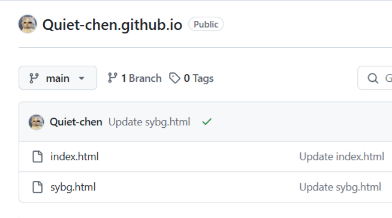
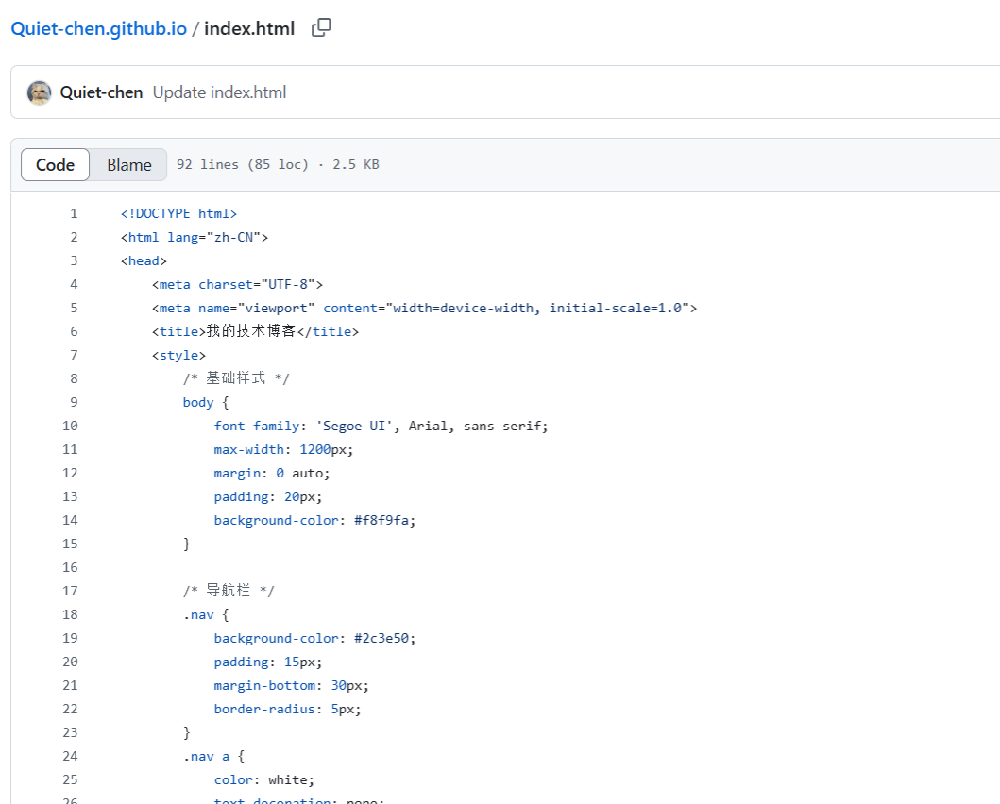
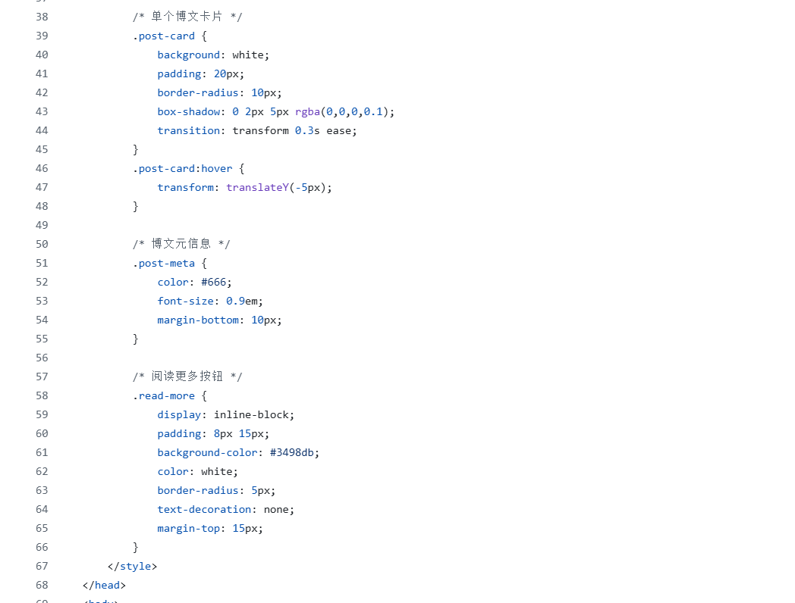
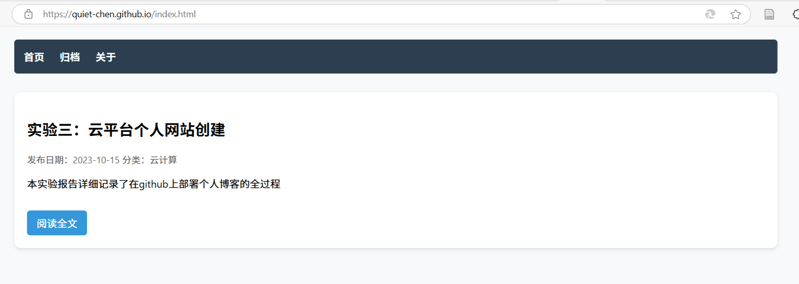
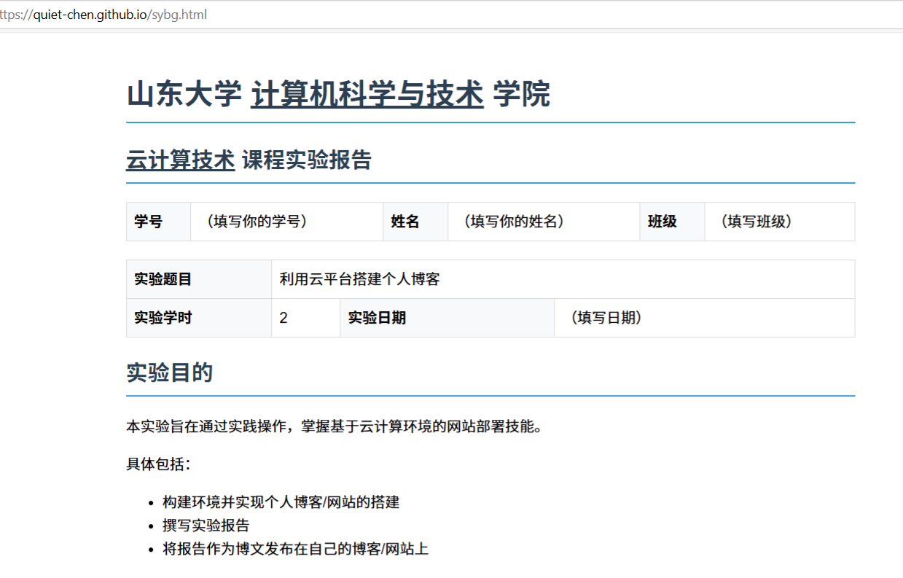
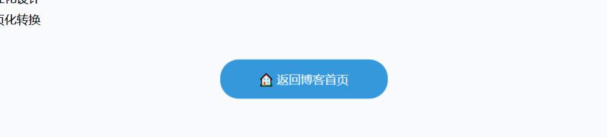

| 学号 | 202200130048 | 姓名 | 陈静雯 | 班级 | 计科22.6 |
|---|
| 实验题目 | 利用云平台搭建个人博客 | ||
|---|---|---|---|
| 实验学时 | 2 | 实验日期 | 2025.3.12 |
通过实践操作掌握基于云计算环境的网站部署技能，具体包括：
| 硬件环境 | 联网的计算机一台 |
|---|---|
| 软件环境 | Windows/Linux 操作系统 |
创建与用户名相同的仓库，后缀为.github.io

（1）创建主页index.html


（2）实现效果及跳转按钮

将报告转换为HTML页面并设置返回链接

